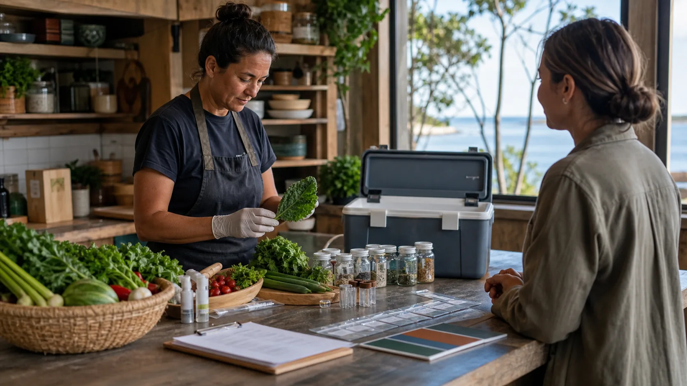

Consent first
People choose what they share, whether they are named, and whether their contribution becomes public.
Shared Table works when people feel safe to offer food, ask for help, say no, name allergies, choose different meal times and keep private details private.

Put this spirit into every private board, roster and cook-up. It keeps the whole thing human.
People choose what they share, whether they are named, and whether their contribution becomes public.
Breakfast, brunch, late pickup, split prep and non-traditional rosters are part of the design.
Asking for food, offering leftovers, needing help or learning AI prompts should feel normal.
Use plain notes for dates, ingredients, allergens, storage and who checked the food.
Do not publish cultural knowledge, local harvesting claims or place-based stories without permission.
If food, permission or privacy is uncertain, keep it out of the shared meal and public notice.